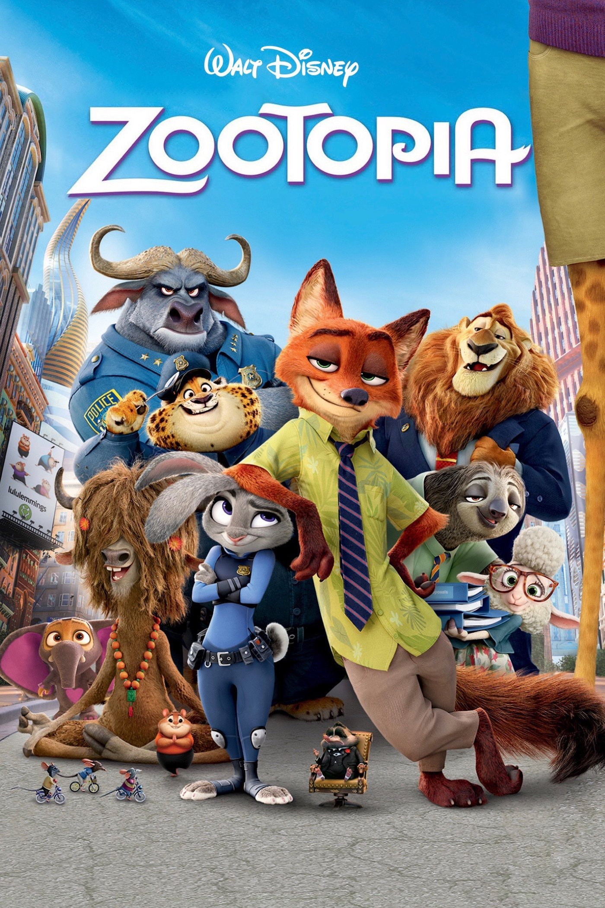

Monte Carlo
Premiere : July 1, 2011 ( Philippines )
Director : Thomas Bezutch
Song : Who Says
Cash gathering : 39,7 million USD
Nominations : ALMA Award in the nomination “Outstanding Actress in a Feature Film”
Description : Monte Carlo is a romantic comedy with elements of a melodrama of 2011,
filmed by Thomas Bezutch.Selena Gomez, Leighton Meester and Katie Cassidy starred in this film.
World and Russian film premieres took place on June 30, 2011...
Step up revolution
Premiere : July 26, 2012 ( Hong Kong )
Director : Scott Speer
Composer : Aaron Zigman
Cash gathering : 140,5 million USD
Description : Emily, the daughter of an influential businessman, arrives in Miami with the
intention of becoming a professional dancer, but falls in love with Sean, a young man whose
dance troupe arranges musical flash mobs. The team, called MOB, participates in the competition
with an impressive cash prize, and in the meantime Emily's father is on ...
Zootopia

Premiere : February 10, 2016 ( Belgium )
Directors : Byron Howard , Rich Moore
Song : Try Everything
In roles : Shakira , Ginnifer Goodwin , Jenny Slate , MORE
Awards : Academy Award for Best Animated Feature Film
Description : Welcome to Zveropolis - a modern city inhabited by a variety of animals, from huge
elephants to tiny mice. Zveropolis is divided into areas completely repeating the natural habitat
of different inhabitants - there is both an elite area of the Sahara Square and an inhospitable
Tundraun. In this ...
Freedom writers
Premiere : January 5, 2007 ( USA )
Director : Richard Lagravenes
Scenario : Richard Lagravenes
Cast : Hilary Swank , April Lee Hernandez , Patrick Dempsey ,
Idea : Erin Gruwell , Freedom Writers
Description : The story of the difficult everyday life of an English teacher who teaches in one of
the schools in the Californian town of Long Beach. Her students are almost all subjects for whom
English is not at all a native language. On top of that, Long Beach is famous for its gangster traditions...
The Book Thief
Premiere : November 8, 2013 ( USA )
Director : Brian Percival
Idea : Marcus Zusak
Voice over : Roger Allam
Awards : Sputnik Award in the Breakthrough of the Year nomination
Description : Germany, the beginning of 1939, the eve of the Second World War. Death is preparing to
begin its harvest. Nine-year-old Liesel moves to Munich to her adoptive parents and learns to read with
their help. Every day, reading becomes her vital need, and Lizel begins to steal books - the only one ...